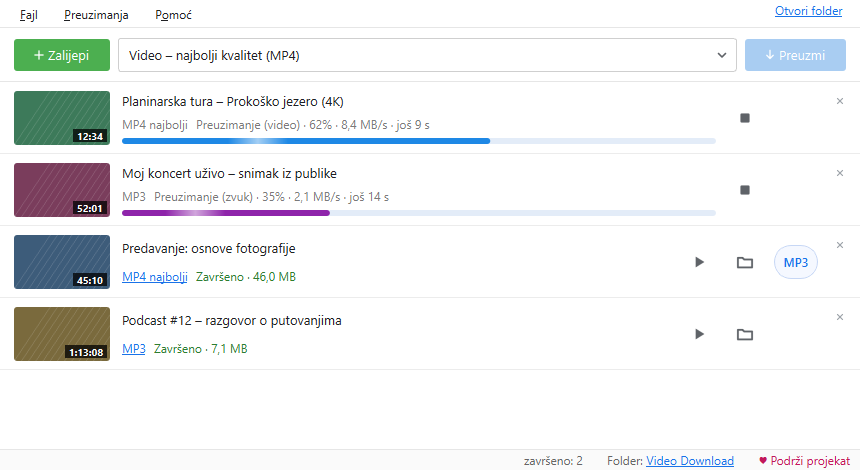

Video i zvuk.
Jednim klikom.
Besplatan program za Windows i Mac: MP4 u punom kvalitetu ili MP3, direktno iz browsera ili iz kopiranog linka.
Program je namijenjen tvojim vlastitim videima, sadržaju uz dozvolu autora i sadržaju pod slobodnom licencom. Preuzimanjem prihvataš Uslove korištenja. Sadržaj zaštićen DRM-om se ne preuzima.
Probaj: klikni + Zalijepi.
Sve što treba,
ništa viška.
Jednostavan prozor, a ispod njega sve što očekuješ od dobrog programa za preuzimanje.
MP4 do najboljeg kvaliteta
Najbolji, 1080p, 720p ili 480p. Slika i zvuk se sami spajaju u MP4 koji radi svuda.

Samo zvuk: MP3 ili M4A
Za predavanja, podcaste i muziku. Gotov MP4 se jednim dugmetom pretvara u MP3.
Kopiraj link i gotovo
Program sam primijeti kopiran link i doda ga u red.
Plejliste, više odjednom
Cijele plejliste, do 4 preuzimanja istovremeno, automatski novi pokušaj kad pukne veza.
Isječak, titlovi, omot
Samo dio videa, titlovi u MP4 i sličica kao omot fajla.
Svijetla i tamna tema
Ili kao sistem. Napredak na traci zadataka i obavještenje na kraju.
Uvijek ažuran i siguran
Program sam provjerava nove verzije, ažurira dio koji čita sajtove bez ponovne instalacije i instalira samo ažuriranja koja smo mi digitalno potpisali.
Preuzmi ono što se pušta.
Pusti video, klikni ikonu i gotovo. Ili desni klik na bilo koji link ili video. Program se sam pokrene ako nije otvoren.
- Firefox: jedan klik, potpisala Mozilla, sam se ažurira
- Edge i Chrome: učitava se jednom iz foldera programa
- Prenos uživo i video zaštićen DRM-om se ne preuzimaju
Prvi fajl za manje od minute.
Instaliraj jednom, pa samo kopiraj linkove.
Instaliraj
Ne traži administratora i ne dodaje ništa drugo na računar.
Dodaj link
Kopiraj link, klikni „Zalijepi“ ili koristi dodatak.
Preuzmi
MP4 ili MP3, pa „Preuzmi“. Fajl čeka u folderu Video Download.
Prvo pokretanje, korak po korak.
Program još nema plaćeni certifikat, pa sistem jednom pita. Ažuriranja iz programa ne pitaju.
Windows može prikazati „Windows je zaštitio vaš računar“. Provjeri da je fajl sa ovog sajta, pa klikni Više informacija i Ipak pokreni.
Beta Novo: Video Download za Mac. Za Mac sa Apple čipom (M1 ili noviji) i macOS 13 ili noviji. Radi, ali ga je probalo još malo ljudi: javi ako nešto ne radi.
Mac verzija još nema Appleov potpis, pa prvo pokretanje traži par klikova više:
- Otvori preuzeti .dmg i prevuci Video Download u Applications.
- Otvori program. macOS kaže da ga ne može provjeriti: klikni Done (ne „Move to Trash“).
- Otvori System Settings → Privacy & Security (Postavke sistema → Privatnost i sigurnost), skroluj dolje, klikni Open Anyway (Ipak otvori) i upiši lozinku Maca.
- Ponovo otvori program i potvrdi Open. To treba samo jednom.
Svake sedmice bolje.
Ista lista kao u programu (Pomoć → Šta je novo).
0.9.6 26.9.2026
- Ažuriranja su digitalno potpisana: program instalira samo novu verziju koju smo mi potpisali, čak i ako neko podmetne drugi fajl na mjesto objave.
- Pri prvom pokretanju kratka obavijest da program prati kopirane linkove, s dugmetom da se to odmah isključi.
- Zaostali privremeni fajlovi s kolačićima (poslije naglog prekida) brišu se pri sljedećem pokretanju; duge liste troše manje memorije.
- Veza s dodatkom u pretraživaču otpornija je na spore i zaglavljene zahtjeve.
0.9.5 26.9.2026
- 1080p, 720p i 480p dobijaju oznaku u imenu fajla, pa različit kvalitet istog videa više nije „već preuzeto“.
- Dva videa istog naslova (ime fajla bez ID-a) više se ne miješaju; isti video pokrenut dvaput istovremeno čeka da prvi završi.
- „Završeno“ tek kad gotov fajl postoji i može se pročitati; pretvaranje u MP3 se uvijek može prekinuti.
- Zatvaranje programa ne zamrzava prozor; ažuriranje čeka i pretvaranja u MP3.
0.9.4 26.9.2026
- Stabilnost: isti link se može ponovo dodati odmah poslije „Zaustavi“.
- Ažuriranje čitača sajtova (yt-dlp) više ne briše verziju koja radi; ako nova ne radi, program se sam vraća na prethodnu.
- Oštećena istorija ili red ne obaraju program; ako čuvanje ne uspije, program to javi.
- Deinstalacija uklanja i vezu s Firefoxom; ograničenje brzine se dijeli samo na preuzimanja koja stvarno rade.
Program je besplatan.
Bez reklama, bez praćenja i bez „premium“ verzije. Ako ti koristi, možeš dobrovoljno podržati razvoj. Prilog ništa ne otključava: program je isti za sve.
 Skeniraj kamerom telefona
Skeniraj kamerom telefonaPitanja?
Ako nešto ne radi: u programu Pomoć → Sačuvaj izvještaj o problemu, pa prijavi problem. Prijave su javne: ne upisuj lozinke ni lične podatke.
Video se odjednom ne preuzima.
Sajtovi često mijenjaju način rada. Pomoć → Ažuriraj čitač sajtova (yt-dlp), pa pokušaj ponovo.
Zašto se prenos uživo ne preuzima?
Prenos uživo nema kraja, pa bi preuzimanje trajalo beskonačno. Preuzmi ga kad se završi i snimak bude objavljen.
Šta program šalje na internet?
Samo ono što je potrebno: link koji preuzimaš ide do tog sajta, a provjera ažuriranja ide na GitHub i PyPI. Nema naloga, statistike ni praćenja.
Da li je siguran?
Kod je javan na GitHubu, svaki instaler ima SHA-256 zbir, a program instalira samo ažuriranja koja smo mi digitalno potpisali.